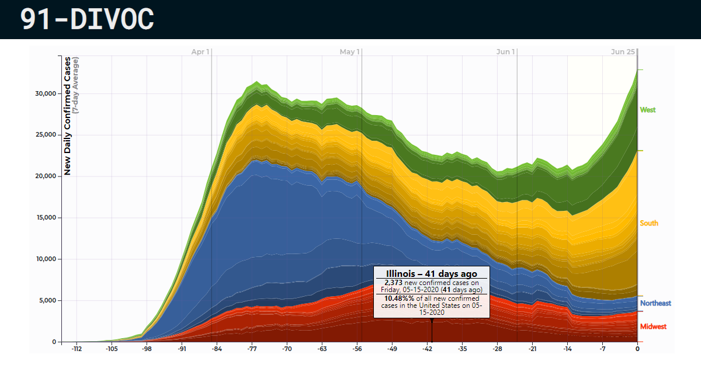

Coronavirus Contribution by State
Visualizing each state's contribution to coronavirus pandemic in the United States.
A few interesting bits I found interesting to explore:
These graphs are not just images.
Hover or tap any data point
to see the data behind it.
You can choose different data, regions,a nd visualizations of the data with options below the chart:
My favorite includes changing the
"View"
and the
"Group By"
sections to explore the data.
This visualization is
updated daily
from multiple data sources.
Data Source:
Johns Hopkins University CSSE
The COVID Tracking Project (The Atlantic)
{% include_relative graphs/_states.html %}
Explore More 91-DIVOC
91-DIVOC #01
: An interactive visualization of the exponential spread of COVID-19
91-DIVOC #02
: COVID-19 Data for Locations of People You Love
91-DIVOC #03
: Coronavirus Visualized as a 1,000-Person Community
